See also the COMPARATIVE TABLE below
| GRADE | NAME | NOTES | NOTES TRANSPOSED IN C |
| I | HUNGARIAN | 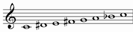 | |
| II | SUPERLOCRIAN bb6 bb7 | 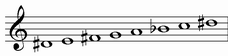 | 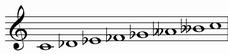 |
| III | HARMONIC MINOR b5 | 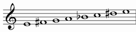 | 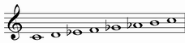 |
| IV | SUPERLOCRIAN #6 | 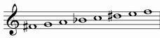 | 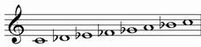 |
| V | JAZZ MINOR #5 | 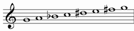 | 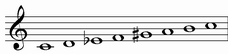 |
| VI | DORIAN b9 #11 | 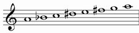 | 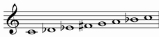 |
| VII | LYDIAN AUGMENTED #3 | 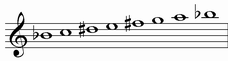 | 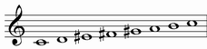 |
HUNGARIAN |
Alternative names: Hungarian Major, Lydian Dominant sharp 2, Mixolydian sharp 9 sharp 11, Lydian #2 b7, Mixolydian #2 #4
It starts from the first grade of hungarian scale
Structure: 3121212
| chords over first notes: | ||
| Triad: | Seventh chord: | Complete chord: |
| major | dominant | |
|
|
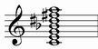 |
Chord simbols: C, C7, C7(#9 #11)
Enharmonic chord simbols: Cm7, CØ, C7(b5)
SUPERLOCRIAN bb6 bb7 |
It starts from the second grade of hungarian scale
Structure: 1212123
| chords over first notes: | |
| Triad: | Seventh chord: |
| diminished | diminished |
 |
 |
Chord simbols: Cdim, C°
HARMONIC MINOR b5 |
Alternative names: Harmonic Minor flat 5
It starts from the third grade of hungarian scale
Structure: 2121231
| chords over first notes: | ||
| Triad: | Seventh chord: | Complete chord: |
| diminished | minor with major seventh and diminished fifth | |
|
 |
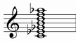 |
Chord simbols: Cm^(b5)
Enharmonic chord simbols: Cm^(#5)
SUPERLOCRIAN #6 |
Alternative names: Superlocrian sharp 6
It starts from the fourth grade of hungarian scale
Structure: 1212312
| chords over first notes: | |
| Triad: | Seventh chord: |
| diminished | half diminished |
|
 |
Enharmonic interpretation:
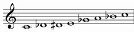
| chords over first notes: |
| Seventh chord: |
| dominant with diminished fifth |
 |
Enharmonic chord simbols: C7(b5), C13(b5 b9 #9)
JAZZ MINOR #5 |
Alternative names: Melodic Minor sharp 5
It starts from the fifth grade of hungarian scale
Structure: 2123121
| chords over first notes: | |
| Seventh chord: | Complete chord: |
| minor with major seventh and augmented fifth | |
 |
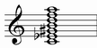 |
Chord simbols: Cm^(#5)
DORIAN b9 #11 |
Alternative names: Dorian flat 9 sharp 11
It starts from the sixth grade of hungarian scale
Structure: 1231212
| chords over first notes: | ||
| Triad: | Seventh chord: | Complete chord: |
| minor | minor seventh | |
 |
 |
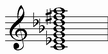 |
Chord simbols: Cm, Cm7, Cm7(b9 #11)
Enharmonic chord simbols: Cm7(b5)
LYDIAN AUGMENTED #3 |
Alternative names: Lydian Augmented sharp 3, Lydian #3 #5
It starts from the seventh grade of hungarian scale
Structure: 2312121
between Octatonic scale and some Hungarian scale modes (I, II, IV and VI)
| OCTATONIC | C | Db | D# | E | F# | G | A | Bb | C | ||||
| HUNGARIAN | C | D# | E | F# | G | A | Bb | C | |||||
|
SUPERLOCRIAN bb6 bb7 |
C | Db | D# | E | F# | G | A | C | |||||
| SUPERLOCRIAN #6 | C | Db | D# | E | Gb | A | Bb | C | |||||
| DORIAN b9 #11 | C | Db | Eb | F# | G | A | Bb | C |
between Diminished scale and the rest of modes from Hungarian scale (III, V and VII)
| DIMINISHED | C | D | Eb | F | Gb | G# | A | B | C | ||||
| HARMONIC MINOR b5 | C | D | Eb | F | Gb | Ab | B | C | |||||
| MELODIC MINOR #5 | C | D | Eb | F | G# | A | B | C | |||||
| LYDIAN AUGMENTED #3 | C | D | E# | F# | G# | A | B | C |
See also Diminished (and Octatonic) scale